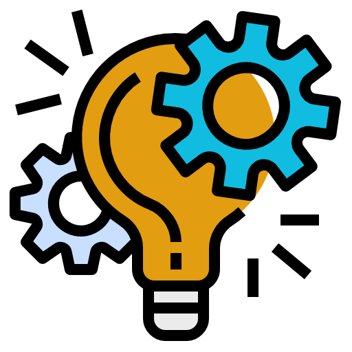

About me
"Just a 24-year-old guy into tech—came to Japan, enrolled in a programming course, and started chasing his dreams."

Current ProgressI'm currently learning/Experencing Real world System integrations, IT tools, Cloud Management, Data Management and AI
-
I am passionate about exploring how technology can solve real-world problems, improve business and create smarter, more efficient solutions.
- I continuously developmy technical skills, work on personal projects, and explore new technologies to grow as an engineer.
This site will also serve as a central hub for potential collaborators, recruiters, and future friends to learn more about me.
Tech I Love
I'm committed to learning and growing both personally and professionally.
- Currently Learning: Java, JavaScript (JS), PHP, MySQL, HTML, and CSS.
- Goals for Mastery: I want to master my current languages, especially Java and JavaScript.
- Future Learning Plans: I'm aiming to learn React, Node.js and explore other programming languages and framework.
I'm eager to gain experience and continue developing my skills.
When I'm Not Coding/learning...
I enjoy:
- Playing video games to relax and recharge
- Listening music and vibe the rhythm and lyrics
- Exploring new technologies and keeping up with industry trends
 Future Plans
Future Plans
- Gain practical experience in Digital Transformation (DX) and system integration
- Build innovative real-world projects using modern technologies
- Strengthen my skills in IT world
- Discover and implement efficient, innovative solutions to real-world challenges.